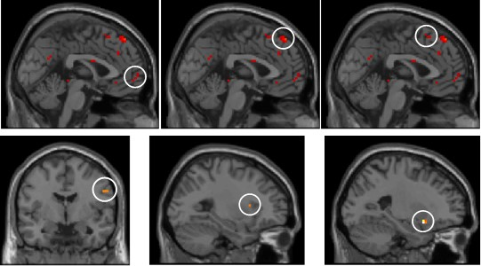
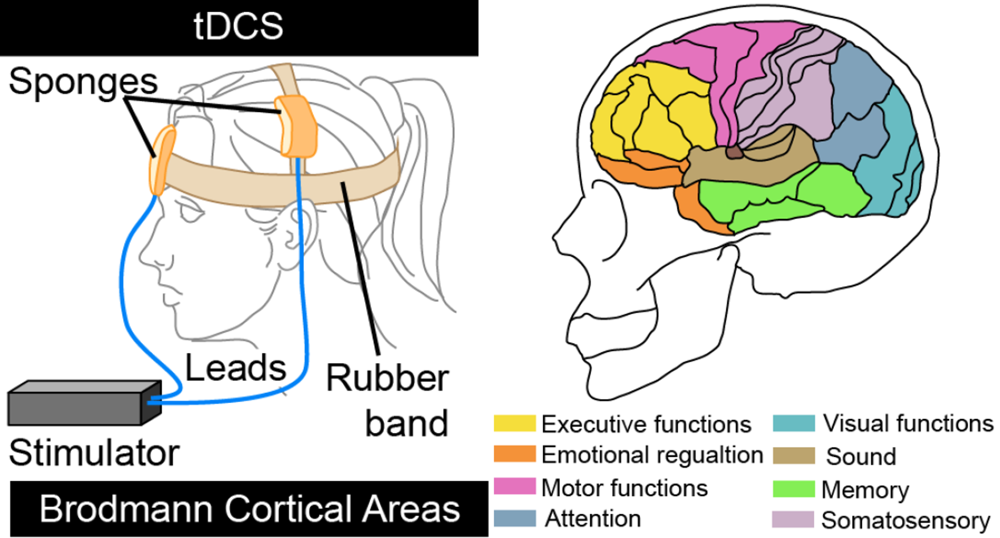
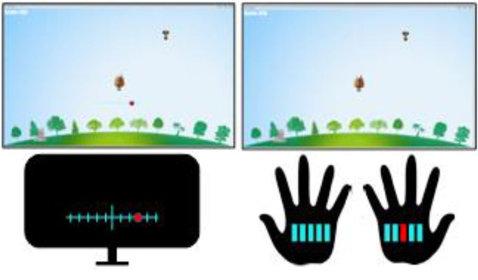

Neural Correlates of Usability
Usability has a distinct subjective component, yet surprisingly little is known about its neural basis and relation to the neuroanatomy of aesthetics. To begin closing this gap, we conducted two functional magnetic resonance imaging (fMRI) studies in which participants were shown static webpages and videos of interaction with webpages.

Enhancing Interactivity with tDCS
Transcranial Direct Current Stimulation (tDCS) is a non-invasive type of neural stimulation known for modulation of cortical excitability leading to positive effects on working memory and attention. We review the relevant literature and identify potential avenues for exploration within the context of enhancing interactivity and use of low-cost and consumer grade tDCS devices in the context of HCI.

A Dynamic & Flexible and Interactive Display
We propose D-FLIP (Dynamic & Flexible Interactive PhotoShow), a novel algorithm that dynamically and interactively displays digital photos using different organizing principles. The global layout of all photos is automatically varied. We present examples of photograph behaviors that demonstrate the algorithm and then investigate users’ task engagement using EEG in the context of story preparation and telling.

Tactile Feedback for Motor-Imagery based BCI
Motor-Imagery based Brain Computer Interfaces (MI-BCIs) allow users to interact with computers by imagining limb movements. MI-BCIs are very promising for a wide range of applications but often require visual feedback to inform the user about the system’s decisions. This work presents our design and evaluation of a tactile feedback glove for MI-BCIs, which provides a continuously updated tactile feedback.

Error Related Negativity for Interaction Design
This paper examines the ability to detect a characteristic brain potential called the Error-Related Negativity (ERN) using off-the-shelf headsets and explores its applicability to HCI. ERN is triggered when a user either makes a mistake or the application behaves differently from their expectation.